One table. One oven.
We opened our doors with a handwritten menu and a borrowed oven. From the start, the aim was simple: make thoughtful bread for the people just around the corner.
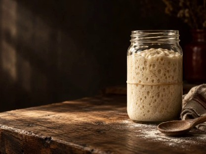
A word from the bakehouse
Long before the loaves reach the counter, there's grain from nearby mills, a jar of starter that gets looked after every day, and dough given the night to find its own way.
Crumb & Co. started in 2018 with a borrowed oven and a simple idea: the neighbourhood deserves really good bread. Our methods have stayed slow, our menu follows the seasons, and there's usually flour on somebody's sleeve.
From the first bake until now
Some things change with the season. These are the things that made us who we are.
We opened our doors with a handwritten menu and a borrowed oven. From the start, the aim was simple: make thoughtful bread for the people just around the corner.

We learned to give each dough its own time and each bake a watchful eye. Weather, flour, and the feel of the dough all have a say in what comes out of the oven.
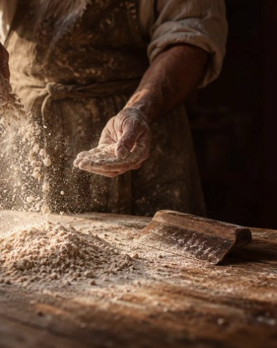
As our little bakehouse grew, so did the menu. Croissants, savoury bakes, good coffee, and a place to sit awhile all found a home beside the bread.
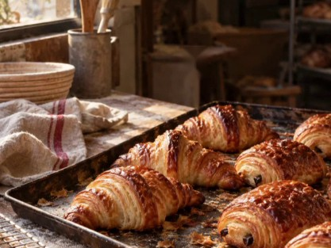
Today, we’re still a small crew of early risers. We bake in thoughtful batches and love seeing familiar faces come back through the door.

How we work
Good baking isn't a secret recipe. It's a few thoughtful choices, made again and again.
We work with regional mills and seasonal grain. When the flour changes, the dough teaches us what it needs.
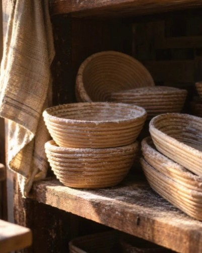
Our dough rests overnight, slowly. No rush and no shortcuts: just a patient process that lets flavour develop.
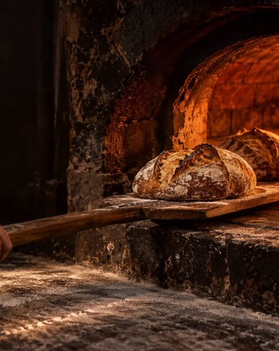
The weather shifts, each batch is its own, and good bread takes a little judgement. We keep showing up and looking closely.
Flour on somebody's sleeve
A small crew of early risers, careful hands, and familiar faces behind the counter.
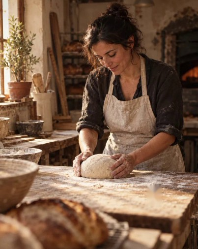
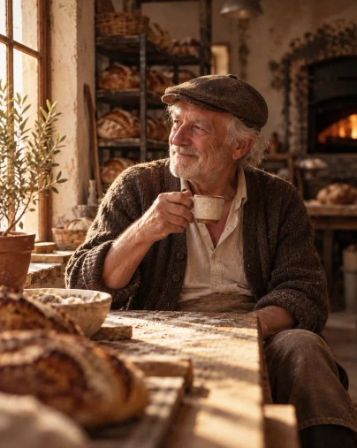
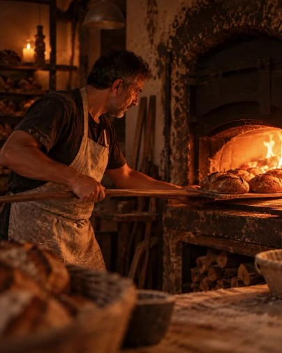
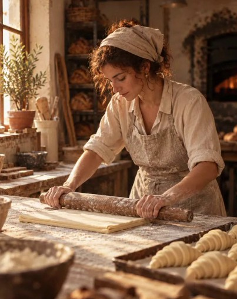
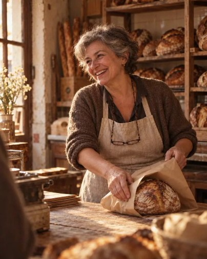
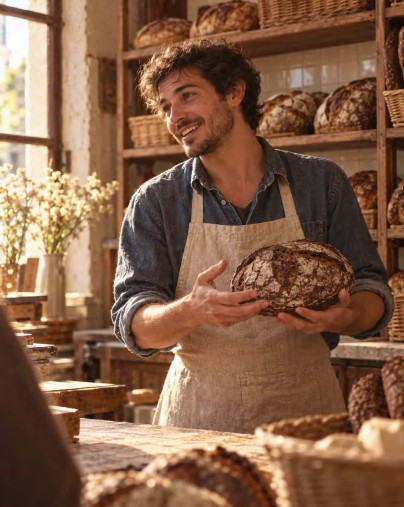
A little reminder from the oven
“Good bread is mostly patience. The rest is getting up early.”Baked with care, at Crumb & Co.
There's always room at the table
We'd love to hand you something warm, make you a coffee, and hear what's happening on your side of the street.